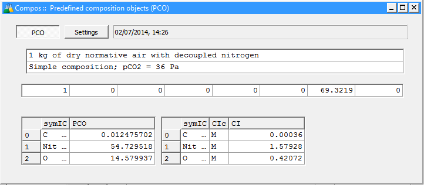
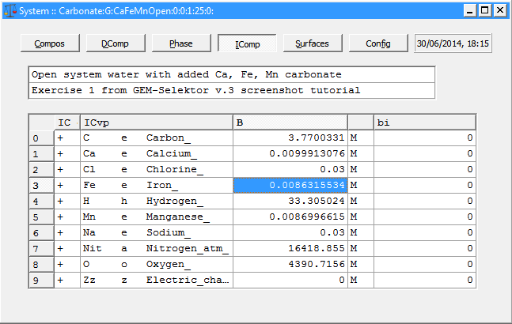

Previous Page Back to Start Page
(9)
The "System" module window (shown below) serves for a detailed setup of
the model chemical system.
The "Compos" page, where you get after clicking on
the
"Bulk
Composition"  toolbar button on "Single Thermodynamic
System" dialog, offers you an easiest way to express your "recipe"
to be "cooked" in the chemical equilibrium "kitchen".
toolbar button on "Single Thermodynamic
System" dialog, offers you an easiest way to express your "recipe"
to be "cooked" in the chemical equilibrium "kitchen".
Click on the "Compos (xa_)" entry in the "Property" list at the left-hand
side. In "Selection" list, click once on entries "Aqua", "AtmAirNit",
"CaCO3", "FeCO3", "MnCO3" and "NaCl". These entries should remain
highlighted, and in the "Recipe Input" area, you should see a small
spreadsheet with all selected entries. In the "Quantity" column of that
spreadsheet, put 300 g of water (Aqua), 300 kg of air, 1 g of CaCO3, 1 g
of FeCO3, 1 g of MnCO3, and0.03 mol of NaCl, as show in the screen image
below. To change Units for NaCl from grams 'g' to moles 'M', double-click
on the entry (or select this entry and type space ' ') and select 'M' from
the drop-down list. In the "tname" row, type a comment telling what this
system should be in plain words.

If you see the above recipe, click "Ok" to proceed.
It is important to realize that entries in the "Compos (xa_)" property selection list are neither thermodynamic phases nor their components; these entries are names of Predefined Composition Objects (PCO), kept as "Compos" records in GEM-Selektor databases (in this case, in the "Carbonate" project database).
(10) PCO is a database record
that contains elemental
stoichiometry
of a commonly used ingredient, such as water, air, acid, base, mineral
solid, rock, or sediment, to put into the "equilibration
pot" to define the bulk composition of the whole system.
Some PCO "Compos" records are provided in the GEM-Selektor default
database. Of course, you can create in your project database as many your
own PCO
records
as you wish. A
Compos
module window dispalying the "AtmAirNit" PCO is shown below (the full
record key is "AtmAirNit:GA:1kg_dry_Nit_air_simple_:").

Note that in the above screen image, the resulting PCO stoichiometry is
normalized to 1 kg
mass, so
that
adding "1 mol" of this PCO is equivalent to adding 1 kg of "normative
air
with decoupled nitrogen". Vice versa, adding 2 g of this predefined
composition
will add 1/500 of the above stoichiometry (i.e., 0.000024951 mol of C,
0.109459034
mol of Nit and 0.029159874 mol of O) to bulk composition of the system.
(you can get it by marking the
PCO name in the list and pressing F7)
(11) Now, imagine your
model
system as a pot where you put all necessary ingredients, close it,
shake,
and keep at temperature T and pressure P of
interest
long enough to get the "stew" equilibrating into a new phase assemblage.
>
Recipe >  >
Equilibrium speciation
>
Equilibrium speciation
This is pretty similar
to
what happens in nature, what chemists do practically, and what the GEM
IPM
algorithm does mathematically. The GEM-Selektor code actually does it
in
two steps.
It sums input quantities of all ingredient stoichiometries up into a single vector b of total elemental bulk composition of the system (i.e. into an elemental "formula" of the whole system).
The GEM IPM module splits the b vector into moles of phases Xa and their species x present at equilibrium state.
The first step is done (without running IPM algorithm) when you click upon a "Calculate bulk composition" toolbar button on the "Single Thermodynamic System" dialog. You can check the result in the "IComp" page of "System" module window, as shown below (vector B_). To open this window, use the "Data" "Detailed input recipe..." menu item.

We see that after the Calcuclate Bulk
Composition" operation, all
ingredients
(in our case, PCO additions in the recipe) are already mixed into a single
"brew"
(vector
B_).
(12) To equilibrate this "brew in the pot", close the "System" window and click on a "Calculate equilibrium" toolbar button. This will start the GEM IPM algorithm module, which displays an IPM Progress Dialog:
In a fraction of second, the IPM Progress
Dialog will indicate that the GEM has converged. Press on the "Accept"
button to save the (now
complete)
SysEq record into your project database.
Congratulations!
Now, you can examine your first GEMS-calculated equilibrium; just
proceed to the next page of this screenshot tutorial.